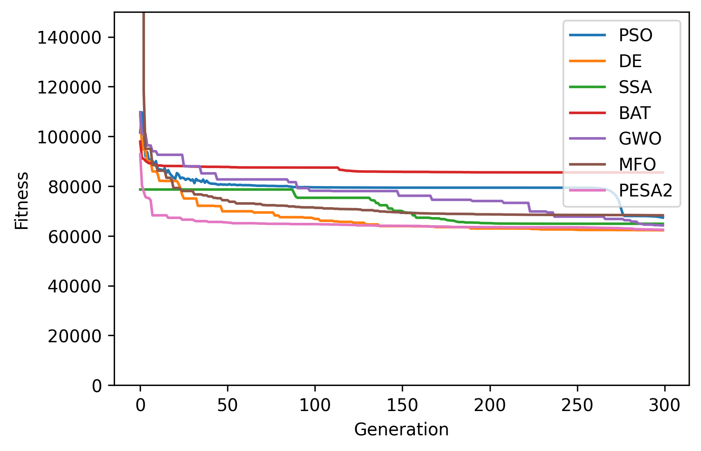
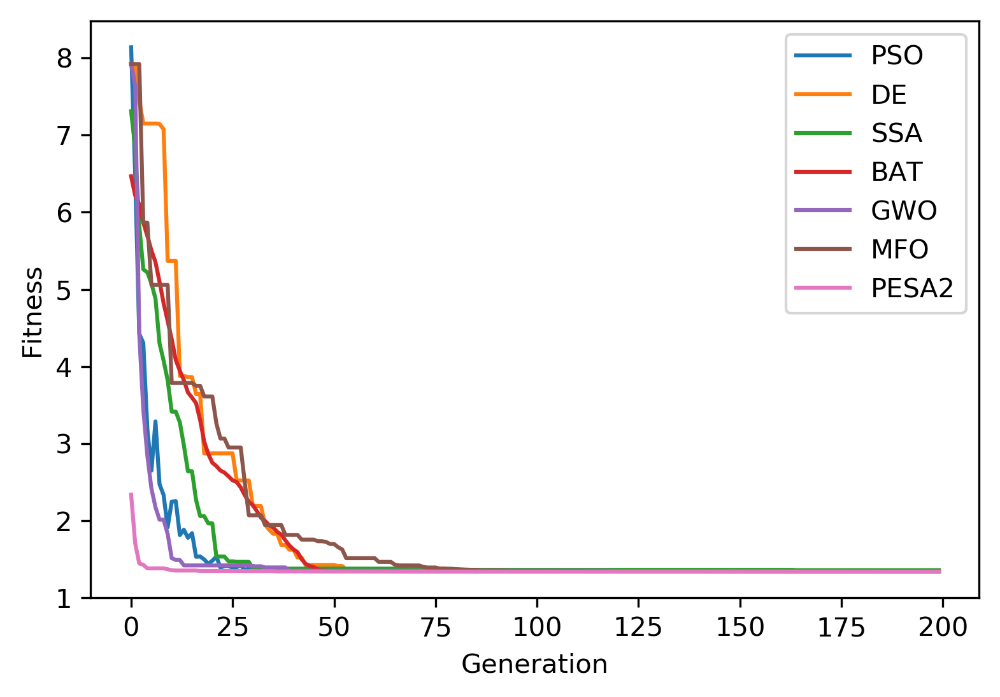

Example 9: Cantilever Stepped Beam¶
Example of solving the constrained engineering optimization problem “Cantilever Stepped Beam” as well as a simpler square case using NEORL with the PSO, DE, SSA, GWO, MFO, BAT, and PESA2 algorithms.
Summary¶
Algorithms: PSO, DE, SSA, GWO, MFO, BAT, PESA2
Type: Continuous, Single-objective, Constrained
Field: Structural Engineering
Problem Description¶
The cantilever stepped beam design is an engineering optimization problem with the objective to evaluate the optimal heights \(x_1 - x_5\) and widths \(x_6 - x_{10}\) of the five rectangular segments such that the volume of the statically loaded cantilever beam is minimized accounting for stress \((\sigma)\) constraints. The figure below shows the dimensions of the cantilever structure

The equation for the volume of the cantilever beam is
where \(l_i\) = 100 cm. The design is subject to 11 constraints:
where \(1 \leq x_i \leq 5\) \((i = 1,2, \ldots, 5)\), \(30 \leq x_i \leq 65\) \((i = 6,7,\ldots,10)\), \(P = 50,000 N\), and \(E = 2 \times 10^7 N/cm^2\).
NEORL script¶
#---------------------------------
# Import packages
#---------------------------------
import numpy as np
import matplotlib.pyplot as plt
from neorl import PSO, DE, SSA, GWO, MFO, BAT, PESA2
#---------------------------------
# Fitness function
#---------------------------------
def CSB(individual):
"""Cantilever Stepped Beam
individual[i = 0 - 4] are beam widths
individual[i = 5 - 9] are beam heights
"""
check=all([item >= BOUNDS['x'+str(i+1)][1] for i,item in enumerate(individual)]) \
and all([item <= BOUNDS['x'+str(i+1)][2] for i,item in enumerate(individual)])
if not check:
raise Exception ('--error check fails')
P = 50000
E = 2 * 10**7
l = 100
g = np.zeros(11)
g[0] = 600*P/(individual[4] * individual[9]**2) - 14000
g[1] = 6*P*(2*l)/(individual[3] * individual[8]**2) - 14000
g[2] = 6*P*(3*l)/(individual[2] * individual[7]**2) - 14000
g[3] = 6*P*(4*l)/(individual[1] * individual[6]**2) - 14000
g[4] = 6*P*(5*l)/(individual[0] * individual[5]**2) - 14000
g[5] = 0
g[6] = individual[9]/individual[4] - 20
g[7] = individual[8]/individual[3] - 20
g[8] = individual[7]/individual[2] - 20
g[9] = individual[6]/individual[1] - 20
g[10] = individual[5]/individual[0] - 20
g_round=np.round(g,6)
w1=1000
w2=1000
phi=sum(max(item,0) for item in g_round)
viol=sum(float(num) > 0 for num in g_round)
V = 0
for i in range(5):
V += individual[i] * individual[i+5] * l
return V + w1*phi + w2*viol
#---------------------------------
# Parameter space
#---------------------------------
nx=10
BOUNDS={}
for i in range(1, 6):
BOUNDS['x'+str(i)]=['float', 1, 5]
for i in range(6, 11):
BOUNDS['x'+str(i)]=['float', 30, 65]
#---------------------------------
# PSO
#---------------------------------
pso=PSO(mode='min', bounds=BOUNDS, fit=CSB, c1=2.05, c2=2.1, npar=50, speed_mech='constric', ncores=1, seed=1)
pso_x, pso_y, pso_hist=pso.evolute(ngen=300, verbose=0)
#---------------------------------
# DE
#---------------------------------
de=DE(mode='min', bounds=BOUNDS, fit=CSB, npop=50, F=0.5, CR=0.7, ncores=1, seed=1)
de_x, de_y, de_hist=de.evolute(ngen=300, verbose=0)
#---------------------------------
# SSA
#---------------------------------
ssa=SSA(mode='min', bounds=BOUNDS, fit=CSB, nsalps=50, c1=None, ncores=1, seed=1)
ssa_x, ssa_y, ssa_hist=ssa.evolute(ngen=300, verbose=0)
#---------------------------------
# BAT
#---------------------------------
bat=BAT(mode='min', bounds=BOUNDS, fit=CSB, nbats=50, fmin = 0 , fmax = 1, A=0.5, r0=0.5, levy = True, seed = 1, ncores=1)
bat_x, bat_y, bat_hist=bat.evolute(ngen=300, verbose=0)
#---------------------------------
# GWO
#---------------------------------
gwo=GWO(mode='min', fit=CSB, bounds=BOUNDS, nwolves=50, ncores=1, seed=1)
gwo_x, gwo_y, gwo_hist=gwo.evolute(ngen=300, verbose=0)
#---------------------------------
# MFO
#---------------------------------
mfo=MFO(mode='min', bounds=BOUNDS, fit=CSB, nmoths=50, b = 0.2, ncores=1, seed=1)
mfo_x, mfo_y, mfo_hist=mfo.evolute(ngen=300, verbose=0)
#---------------------------------
# PESA2
#---------------------------------
pesa2=PESA2(mode='min', bounds=BOUNDS, fit=CSB, npop=50, nwolves=5, ncores=1, seed=1)
pesa2_x, pesa2_y, pesa2_hist=pesa2.evolute(ngen=600, replay_every=2, verbose=0)
#---------------------------------
# Plot
#---------------------------------
plt.figure()
plt.plot(pso_hist, label = 'PSO')
plt.plot(de_hist, label = 'DE')
plt.plot(ssa_hist['global_fitness'], label = 'SSA')
plt.plot(bat_hist['global_fitness'], label = 'BAT')
plt.plot(gwo_hist['fitness'], label = 'GWO')
plt.plot(mfo_hist['global_fitness'], label = 'MFO')
plt.plot(pesa2_hist, label = 'PESA2')
plt.legend()
plt.xlabel('Generation')
plt.ylabel('Fitness')
plt.ylim(0,150000)
plt.savefig('CSB_fitness.png',format='png', dpi=300, bbox_inches="tight")
Results¶
A summary of the results for the different methods is shown below with the best \(\vec{x}\) and \(y=f(x)\) (minimum volume). DE and PESA2 show the best results
{kind=link}
------------------------ PSO Summary --------------------------
Best fitness (y) found: 67335.91306205148
Best individual (x) found: [3.5688543506518657, 2.7791479019993583, 2.525097748486896, 2.5931709214818746, 3.0184400437701497, 54.792949608125554, 55.55687861890972, 50.45798494270985, 40.66285990348347, 30]
--------------------------------------------------------------
------------------------ DE Summary --------------------------
Best fitness (y) found: 62253.08088965673
Best individual (x) found: [3.0024484908957634, 2.805060577916484, 2.5489794459150485, 2.2104364777790244, 1.7812440232731417, 59.83601779613085, 55.29672939889619, 50.28650239860514, 44.1239666136573, 34.83693680366301]
--------------------------------------------------------------
------------------------ SSA Summary --------------------------
Best fitness (y) found: 64883.21386055779
Best individual (x) found: [ 3.01217612 3.12691389 2.66584391 2.56789564 2.26413108 59.64053204
52.35626719 49.10660541 40.85291814 30.76422498]
--------------------------------------------------------------
------------------------ BAT Summary --------------------------
Best fitness (y) found: 85509.99706478164
Best individual (x) found: [ 3.24944962 3.15901556 3.71034211 2.88044491 2.72539593 57.42189701
63.18019888 41.62463495 57.60433819 54.50783013]
--------------------------------------------------------------
------------------------ GWO Summary --------------------------
Best fitness (y) found: 64217.56500668205
Best individual (x) found: [ 3.0490241 2.82805632 2.54882906 2.60647295 1.91892183 59.32877115
55.25800387 50.22171706 40.6816295 36.98217938]
--------------------------------------------------------------
------------------------ MFO Summary --------------------------
Best fitness (y) found: 68284.66539072228
Best individual (x) found: [ 3.00200798 3.04903017 2.52470544 4.76307633 2.38149254 59.7430926
53.04777538 50.46763269 30.00000001 30.00007271]
--------------------------------------------------------------
------------------------PESA2 Summary-------------------------
Best fitness (y) found: 62491.80715494685
Best individual (x) found: [3.0160894636962894, 2.7812536032709683, 2.5788148288206765, 2.22105253054037, 1.9267356857359532, 59.60349505892154, 55.515872598414006, 49.94170599870354, 43.93631599428571, 33.408629968533766]
--------------------------------------------------------------
Simple Square Case¶
A simpler case of the cantilever stepped beam design is shown in the figure below where the heights and widths of each section of the beam are equal \((x_i = x_{i+5})\) and the cantilever is hollow with constant thickness.

The equation for the volume of the square cantilever beam is
with a single constraint
where \(0.001 \leq x_i \leq 100\)
#---------------------------------
# Import packages
#---------------------------------
import numpy as np
from math import cos, pi, exp, e, sqrt
import matplotlib.pyplot as plt
from neorl import PSO, DE, SSA, GWO, MFO, BAT, PESA2
#---------------------------------
# Fitness function
#---------------------------------
def CSB_square(individual):
"""Square Cantilever Stepped Beam
individual[i = 0 - 4] are beam heights and widths
"""
check=all([item >= BOUNDS['x'+str(i+1)][1] for i,item in enumerate(individual)]) \
and all([item <= BOUNDS['x'+str(i+1)][2] for i,item in enumerate(individual)])
if not check:
raise Exception ('--error check fails')
g = 61/individual[0]**3 + 27/individual[1]**3 + 19/individual[2]**3 + 7/individual[3]**3 + 1/individual[4]**3 - 1
g_round=np.round(g,6)
w1=1000
#phi=max(g_round,0)
if g_round > 0:
phi = 1
else:
phi = 0
V = 0.0624*(np.sum(individual))
return V + w1*phi
#---------------------------------
# Parameter space
#---------------------------------
nx=5
BOUNDS={}
for i in range(1, 6):
BOUNDS['x'+str(i)]=['float', 0.01, 100]
#---------------------------------
# PSO
#---------------------------------
pso=PSO(mode='min', bounds=BOUNDS, fit=CSB_square, c1=2.05, c2=2.1, npar=50, speed_mech='constric', ncores=1, seed=1)
pso_x, pso_y, pso_hist=pso.evolute(ngen=200, verbose=0)
#---------------------------------
# DE
#---------------------------------
de=DE(mode='min', bounds=BOUNDS, fit=CSB_square, npop=50, F=0.5, CR=0.7, ncores=1, seed=1)
de_x, de_y, de_hist=de.evolute(ngen=200, verbose=0)
#---------------------------------
# SSA
#---------------------------------
ssa=SSA(mode='min', bounds=BOUNDS, fit=CSB_square, nsalps=50, c1=0.05, ncores=1, seed=1)
ssa_x, ssa_y, ssa_hist=ssa.evolute(ngen=200, verbose=0)
#---------------------------------
# BAT
#---------------------------------
bat=BAT(mode='min', bounds=BOUNDS, fit=CSB_square, nbats=50, fmin = 0 , fmax = 1, A=0.5, r0=0.5, levy = True, seed = 1, ncores=1)
bat_x, bat_y, bat_hist=bat.evolute(ngen=200, verbose=0)
#---------------------------------
# GWO
#---------------------------------
gwo=GWO(mode='min', bounds=BOUNDS, fit=CSB_square, nwolves=50, ncores=1, seed=1)
gwo_x, gwo_y, gwo_hist=gwo.evolute(ngen=200, verbose=0)
#---------------------------------
# MFO
#---------------------------------
mfo=MFO(mode='min', bounds=BOUNDS, fit=CSB_square, nmoths=50, b = 0.2, ncores=1, seed=1)
mfo_x, mfo_y, mfo_hist=mfo.evolute(ngen=200, verbose=0)
#---------------------------------
# PESA2
#---------------------------------
pesa2=PESA2(mode='min', bounds=BOUNDS, fit=CSB_square, npop=50, nwolves=5, ncores=1, seed=1)
pesa2_x, pesa2_y, pesa2_hist=pesa2.evolute(ngen=400, replay_every=2, verbose=0)
#---------------------------------
# Plot
#---------------------------------
plt.figure()
plt.plot(pso_hist, label = 'PSO')
plt.plot(de_hist, label = 'DE')
plt.plot(ssa_hist['global_fitness'], label = 'SSA')
plt.plot(bat_hist['global_fitness'], label = 'BAT')
plt.plot(gwo_hist['fitness'], label = 'GWO')
plt.plot(mfo_hist['global_fitness'], label = 'MFO')
plt.plot(pesa2_hist, label = 'PESA2')
plt.legend()
plt.xlabel('Generation')
plt.ylabel('Fitness')
plt.savefig('CSB_square_fitness.png',format='png', dpi=300, bbox_inches="tight")
Results¶
A summary of the results for the different methods is shown below with the best \(\vec{x}\) and \(y=f(x)\) (minimum volume). All methods seem to provide a competitive performance.
{kind=link}
------------------------ PSO Summary --------------------------
Best fitness (y) found: 1.306626656954178
Best individual (x) found: [5.991862301957736, 4.854008432279021, 4.45906648152542, 3.493259797938664, 2.141332745180214]
--------------------------------------------------------------
------------------------ DE Summary --------------------------
Best fitness (y) found: 1.3066647539488923
Best individual (x) found: [5.984617044955957, 4.859363916704608, 4.481939339721313, 3.4787350840537297, 2.1354849022068993]
--------------------------------------------------------------
------------------------ SSA Summary --------------------------
Best fitness (y) found: 1.3332617264282474
Best individual (x) found: [6.67840566 4.61630049 4.44312916 3.25464385 2.37389467]
--------------------------------------------------------------
------------------------ BAT Summary --------------------------
Best fitness (y) found: 1.3066162524125051
Best individual (x) found: [5.95831939 4.88767148 4.46680068 3.48865088 2.13792058]
--------------------------------------------------------------
------------------------ GWO Summary --------------------------
Best fitness (y) found: 1.3070265602611708
Best individual (x) found: [5.96696899 4.86209062 4.45726519 3.45643287 2.2031808 ]
--------------------------------------------------------------
------------------------ MFO Summary --------------------------
Best fitness (y) found: 1.3074650261970455
Best individual (x) found: [6.03801813 4.92481126 4.31983845 3.49029899 2.17999833]
--------------------------------------------------------------
------------------------PESA2 Summary-------------------------
Best fitness (y) found: 1.306682971430895
Best individual (x) found: [5.946982974266515, 4.920415488921602, 4.4500401873791695, 3.481789428570952, 2.1412041553312333]
--------------------------------------------------------------